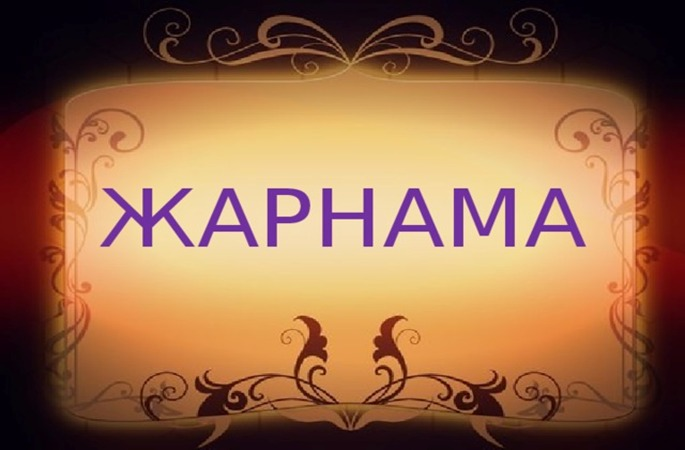

7-ТАПСЫРМА
Жаһандану және сөзжасамның синтетикалық тәсілі
I. Теория
Мақсаты: Мәтінде көтерілген ақпаратты талдай отырып, негізгі ойды анықтап және ғаламдық мәселелермен байланыстыру.
Міндеттері: Адамзат дамуының жаһандық мәселелеріне, яғни ұлттық мәдениеттің жаһандану үрдісіне, экономикалық, ақпараттық-коммуникациялық жаһандану мәселелерін қарастыру.
Бағалау критерийлері: Оқылым және тыңдалым материалдары бойынша негізгі ақпаратты іріктеу.
Дәрістің қысқаша тезистері
Жаһандану адамзат қоғамына не берді? Алдымен, ғылыми-техникалық, экономикалық жетістіктерді айтамыз. Әлемнің бір түкпірінде ашылған ғылыми жаңалық ғаламтор арқылы сол сәтте жер жүзіне тарап, жалпы адам баласының игілігіне айналуда. Жер бетінде жаһандануға ұшырамаған ел кемде-кем. Ұлттық, мемлекеттік шекараларды білмейтін жаһандану бүкіл әлемді қоғамдық дамудың тайқазанында бұрқ-сарқ қайнап жатқан біртұтас дүниеге айналдыруда. Қазір әлемде жаһандану қамтымаған сала жоқ. Ішіп-жеген тамағымыздан бастап, киген киімімізге, мінген көлігімізге, өндіріс орындарының құрал-жабдықтарына, тұрғын, жатын, жұмыс жайларындағы жиһаздарға, техникаларға, өмір сүру, еңбек ету салтымызға дейін қамтып, өзінің өміршеңдігін көрсетіп отыр. Бірінде барды екіншісі пайдаланып, жер бетінде өмір сүріп жатқан халықтардың материалдық, қоғамдық, экономикалық, мәдени жағынан жетіле түсуіне септігі тиері анық.
Қазіргі заманда мәдениеттер мен өркениеттер қақтығысынан үркіп, жаңа заманға бейімделмей, өткенді аңсап, өткенмен ғана өмір сүру ұлттық дамуды тежейді, тіпті жолда қалдырады. Сондықтан жаһанданудың жақсы жақтарын ала білу ұлттық дамудың маңызды шарттарының бірі болып отыр. Бұл – жаһанданудың қоғамдық дамудың барысында туындаған қажеттілігі, пайдалы жағы. (Д.Ысқақұлының «Жаһандану дегеніміз не?» мақаласынан)
1-сурет: Жаһандану және ғылыми жетістіктер
Ережені еске түсірейік! Сөзжасамдық тәсілдер
Тілде жаңа сөз жасаудың қалыптасқан өзіндік жолы, заңдылығы бар. Жаңа сөздер қазақ тілінің заңдылықтары бойынша, яғни сөзжасамдық тәсілдер бойынша жасалады. Қазақ тілінің сөзжасам жүйесінде әбден орныққан, қалыптасқан негізгі тәсілдері мыналар:
- синтетикалық тәсіл;
- аналитикалық тәсіл;
- лексика-семантикалық тәсіл.
Сөзжасамның синтетикалық тәсілі. Синтетикалық сөзжасамдық тәсіл – жаңа сөз жасаудағы негізгі тәсіл. Синтетикалық тәсіл арқылы туынды сөз жасауда екі тілдік бірлік қызмет атқарады: лексикалық мағыналы сөз және сөзжасамдық жұрнақ. Мысалы: жаңалық, жүлдегер, ақылды, ардагер, айыпкер, сәулетші.
Туынды сөздің жасалуына негіз болған сөз бен одан жасалған туынды сөздің мағынасы байланысты болатындықтан, туынды түбірдің қай сөзден жасалғанын дәлелдеуге болады. Мысалы, өнім деген туынды түбірдің лексикалық мағынасы өну әрекеті арқылы шыққан. Өн, өнім сөздерінің мағыналық байланысы анық көрініп тұр, сол арқылы ол дәлелденеді.
Сонымен, сөзжасамдық мағынаны негіз сөз бен туынды түбірдің мағыналық байланысы арқылы ажыратуға болады. Негіз сөз дегеніміз – туынды сөздің лексикалық мағынасына арқау болатын сөз. Мысалы, кәсіпкер, қаламгер, аңшы деген туынды сөздер кәсіп, қалам, аң деген негіз сөздерден жасалған. Ал егінші, өнімді, білімпаз, сәнқойлық деген сөздерге егін, өнім, білім, сәнқой деген туынды түбірлер негіз болған.
Бақылау сұрақтары:
- Еліміздегі жаһандану арқылы дамып келе жатқан салаларды атаңдар.
- «Өткенді аңсап, өткенмен ғана өмір сүру, ұлттық дамуды тежейді» дегенді қалай түсінесіңдер?
- Жаһандану адамзат қоғамына не берді?
Тапсырманы орындау бойынша нұсқаулық (орындау тәртібі):
- Мәтінді түсініп оқиды, түсінгенін айтады;
- Ережелерді оқып, есте сақтап алады;
- Сұрақтарға жауап береді.
Тапсырмадан күтілетін нәтиже: Берілген ақпаратты оқу, сұрақтарға жауап беру, ережені жаттау.
Тапсыру формасы: Ауызша түрде.
Модуль / пән бойынша ұсынылатын әдебиеттер тізіміне сілтемелер: Okulyk.kz - Қазақ тілі (10-сынып)
II. Практика (СӨЖ № 7.2)

2-сурет: Экономикалық жаһандану және нарық
«Артық болмас білгенің» айдары:
Экономикалық жаһандану екі үрдістің жиынтығын – нарықтардың жаһандануын (капиталдық, еңбек ресурстарының, тауарлардың және көрсетулердің) және экономикалық нысандардың жаһандануын білдіреді және экономиканың ұйымдық құрылымдарының – компаниялардың, фирмалардың, корпорациялардың іріленуімен түсіндіриді. Қазіргі уақытта экономикалық жаһанданудың нақты сипаттары бар:
- үлкен компаниялардың жетекші рөлі;
- жаһандық қаржы, валюта және қор рыноктарының қызмет етуі;
- жаһандық ақпараттық желілердің қызмет етуінің нәтижесінде көлік ағындары құрылымының өзгеруі;
- жаһандық сауда-экономикалық бірлестіктер мен одақтардың құрылуы мен қызмет етуі;
- барлық ұлттық және халықаралық қаржылық, валюталық трансакциялардың жаһандық желіге аударылуы;
- бөлшек саудалық, банктік, сақтандыру және сауда операцияларын жаһандық желіге аударылуы.
1-тапсырма. Сұхбат құрастыру («РАФТ стратегиясы»)
Тапсырма: Жоғарыдағы ақпаратты пайдаланып, ғылыми-көпшілік стильдің ерекшеліктеріне сай тілдік құралдарды орынды қолданып, «РАФТ стратегиясы» әдісімен бір компания жетекшісімен сұхбаттасыңдар.
Нұсқаулық: Берілген ақпаратты мұқият оқиды; сұхбат құрастыру барысында ақпаратты тиімді қолданады; сұхбат сұрақтары нақты және белгілі бір тақырып аясында болады.
2-тапсырма. Жарнама дайындау
Тапсырма: Қазақстандағы жаһандық сауда-экономикалық бірлестіктер мен одақтардың құрылуы және қызмет етуі туралы жарнама дайындаңдар.
Нұсқаулық: Қазақстанда жұмыс жасайтын компаниялардың жұмысын көрсетеді; жарнама талаптарын сақтайды.
3-тапсырма. Туынды сөздерді кестеге түсіру
Тапсырма: Оқылым мәтінінен синтетикалық тәсіл арқылы жасалған туынды сөздерді теріп алып, түбірін (негіз сөз) анықтап, кестеге түсіріңдер.
| № | Туынды сөз | Түбірі (Негіз сөз) | Жасалу жолы (Жұрнақ) |
|---|---|---|---|
| 1 | |||
| 2 | |||
| 3 |
Тапсыру формасы: Жазбаша түрде.
Модуль / пән бойынша ұсынылатын әдебиеттер тізіміне сілтемелер: Okulyk.kz - Қазақ тілі (10-сынып)
III. Бағалау парағы
| № | Тапсырма | Дескрипторлар | Ұпай саны | Студенттің ұпай саны |
|---|---|---|---|---|
| 1 | Бақылау сұрақтары: |
• Мәтінді түсініп оқиды, түсінгенін айтады • Ережелерді оқып, есте сақтап алады • Сұрақтарға жауап береді |
10 балл 10 балл 10 балл |
|
| 2 | «Артық болмас білгенің» айдарындағы ақпаратты пайдаланып, «РАФТ стратегиясы» әдісімен сұхбаттасу. |
• Берілген ақпаратты мұқият оқиды; • Сұхбат құрастыру барысында ақпаратты тиімді қолданады; • Сұхбат сұрақтары нақты және белгілі бір тақырып аясында болады |
5 балл 10 балл 10 балл |
|
| 3 | Қазақстандағы жаһандық сауда-экономикалық бірлестіктер мен одақтар туралы жарнама дайындау. |
• Қазақстанда жұмыс жасайтын компаниялардың жұмысын көрсетеді; • Жарнама дайындайды |
5 балл 20 балл |
|
| 4 | Мәтіннен синтетикалық тәсіл арқылы жасалған туынды сөздерді теріп алып, түбірін анықтау. |
• Мәтіннен туынды сөздерді табады; • Сөздердің түбірін анықтайды; • Кестені толтырады |
10 балл 10 балл |
|
| Барлығы: | 100 балл | / 100 | ||